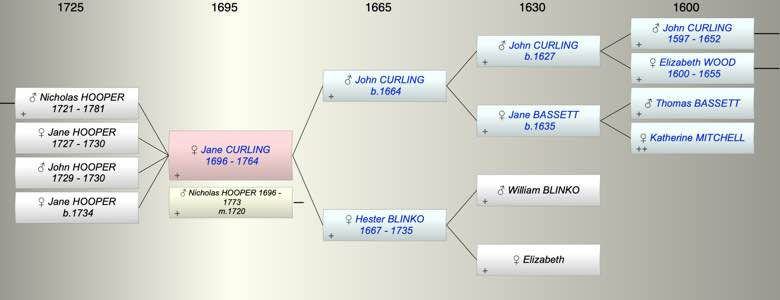

| [Index] |
| Jane CURLING (1696 - 1764) |
|  |
| b. 1696 at St Laurence |
| m. 27 Nov 1720 Nicholas HOOPER (1696 - 1773) at St Laurence |
| d. 25 Jan 1764 at St Laurence aged 68 |
| Parents: |
| John CURLING (1664 - ) |
| Hester BLINKO (1667 - 1735) |
| Siblings (5): |
| Elizabeth CURLING (1691 - ) |
| John CURLING (1694 - ) |
| William CURLING (1698 - 1728) |
| Thomas CURLING (1702 - 1733) |
| Bridger CURLING (1705 - 1746) |
| Children (4): |
| Nicholas HOOPER (1721 - 1781) |
| Jane HOOPER (1727 - 1730) |
| John HOOPER (1729 - 1730) |
| Jane HOOPER (1734 - ) |
| Grandchildren (1): |
| Nicholas HOOPER (1752 - 1777) |
| Events in Jane CURLING (1696 - 1764)'s life | |||||
| Date | Age | Event | Place | Notes | Src |
| 1696 | Jane CURLING was born | St Laurence | Note 1 | ||
| 27 Nov 1720 | 24 | Married Nicholas HOOPER (aged 24) | St Laurence | ex FS | |
| 1721 | 25 | Birth of son Nicholas HOOPER | St Laurence | Note 2 | |
| 16 Jun 1727 | 31 | Birth of daughter Jane HOOPER | Ramsgate | Note 3 | |
| 21 Oct 1729 | 33 | Birth of son John HOOPER | Ramsgate | Note 4 | |
| 1730 | 34 | Death of daughter Jane HOOPER (aged 3) | St Laurence | ||
| 1730 | 34 | Death of son John HOOPER (aged 1) | St Laurence | ||
| 28 Mar 1734 | 38 | Birth of daughter Jane HOOPER | Ramsgate | Note 5 | |
| 12 Sep 1735 | 39 | Death of mother Hester BLINKO (aged 68) | Note 6 | ||
| 25 Jan 1764 | 68 | Jane CURLING died | St Laurence | Note 7 | |
| Personal Notes: |
|
201. Richard HOOPER died 26th February 1720 aged 63 years. Left issue 3 sons and 4 daughters. Also Mary, wife of above, died 17th October 1728 aged 73 years. Also Nicholas, son of above, and Jane, his wife. She died 25th January 1764 aged 67 years. He died 23rd September 1773 aged 77 years. Also Nicholas, son of Nicholas and Jane Hooper, died 10th August 1781 aged 60 years. Also Nicholas, son of Nicholas and Sarah, died 26th August 1777 (buried August 31st) aged 25 years.
Jane b 1997 so she was Jane Curling b 1696 married to Nicholas Hooper St L 27 Nov 1720 ex FS refered to in Thomas' will I wonder if Sarah was Nicholas' sister. |
| Created on a Mac™ using iFamily for Mac™ on 8 Oct 2023 |